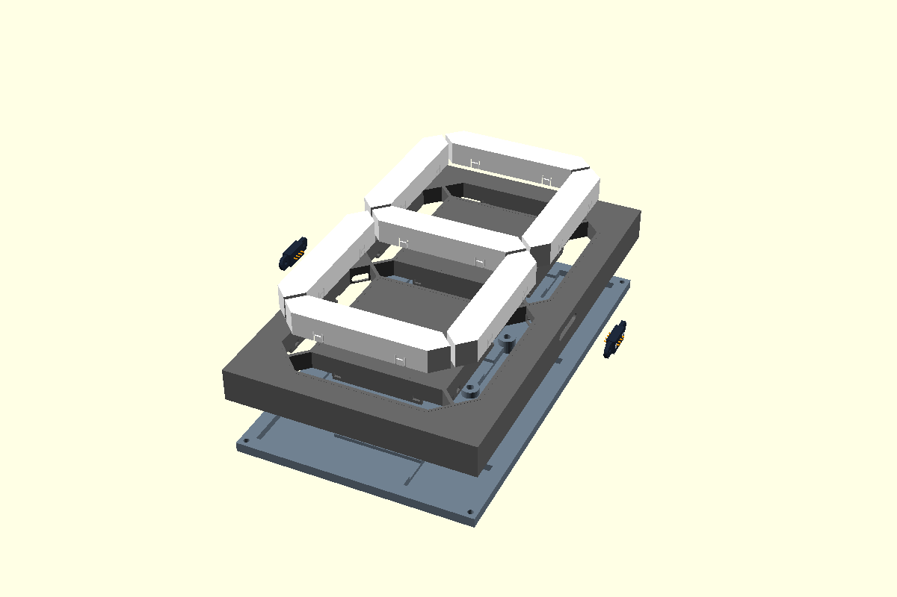
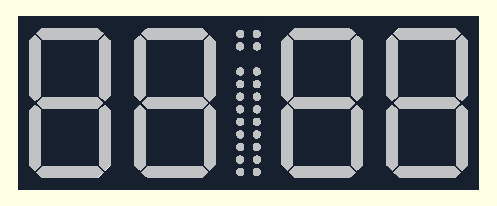

Padel is Europe’s fastest-growing racket sport. High intensity rallies create constant score disputes, side-swap confusion, and missed game points. Commercial solutions are fragile ($500+), rely on cumbersome 230V cabling, or require manual flip-cards.
🎯 The Multidisciplinary Engineering GoalGenesis
Create an open-source, modular, tournament-grade digital scoreboard powered entirely by an everyday 5V USB powerbank. It must be smashproof against 120+ km/h balls, visible under direct 85,000 lux sunlight at 20+ meters, and operated wirelessly from players' wrists without smartphone friction.
136WS2813 LEDs
5VPowerbank Rail
< 35msBLE HID Latency
~$45Total BOM Cost
Dual-Operating Personality: Match & Clock
When match play is active, the board runs full official FIP padel scoring. After 5 minutes of idle time, an onboard DS1302 RTC smoothly crossfades the display into an elegant 24-hour clubhouse wall clock.
Physical Hardware Architecture4 Digits + Central Ladder
Electronics: WS2813 dual-data bus redundancy, single 5V rail distribution, ESP32-C3 SuperMini.
Software/Firmware: Hardware SPI DMA interrupt immunity, master rules engine, dual-role BLE, Web Bluetooth PWA.
Validation: 120 km/h smash impact survival, solar readability, 2.4 GHz RF coexistence, field iterations.
Welcome everyone. This presentation walks through the complete end-to-end development of our 7-segment padel scoreboard. We will look at how mechanics, electronics, embedded firmware, companion web software, and field validation converged to deliver a tournament-grade device at a tenth of the commercial price.
Engineering Methodology • 4 Streams
How This Project Came Together: The 4 Development Streams
02 / 12
1. MechanicsCAD & 3D Print
Parametric modeling in OpenSCAD for instant dimensional adjustments.
Parametric 7-segment housings with light isolation baffles.
Central 24-LED games and sets ladder module.
Behind-the-mesh hook to decouple ball impacts from display.
0.25mm snap interference tolerances for support-free prints.
2. ElectronicsCircuits & Power
Continuous serial bus with fault tolerance and low-quiescent 5V power topology.
136 WS2813 addressable LEDs on a continuous single-bus line.
Backup data line (`BIN`) prevents cascade failure if 1 LED dies.
5V single-rail USB powerbank drive (avoids 230V court hazards).
DS1302 RTC module for autonomous clubhouse clock mode.
3. SoftwareFirmware & Web
Dual-role wireless architecture with interrupt-immune SPI DMA LED output.
Breakthrough: Hardware SPI DMA eliminates BLE interrupt flashes.
ESP32 Master rules engine with 30-step circular undo buffer.
Dual-role BLE (HID Central + GATT Peripheral).
Zero-install Web Bluetooth PWA controller & OTA browser flasher.
4. ValidationTesting & QA
Rigorous court testing validating impact physics, solar lux, and real play.
120 km/h smash ball impact tests behind 50x50mm wire mesh.
85,000 lux outdoor solar visibility contrast verification.
RF coexistence testing with 16 smartphones on court.
Git field iterations resolving side-swap & watchdog timeouts.
Instead of working sequentially, our team worked in four agile streams that cross-informed each other. When mechanical symmetry flipped ribbon connectors on Digit 0, firmware solved it with a software LUT instead of an expensive PCB redo. When BLE interrupts broke NeoPixel bit-banging, firmware engineers pivoted to Hardware SPI DMA.
Stream 1 • Mechanical Engineering
Parametric 3D CAD: Anti-Bleed Light Channels & Snap Fits
03 / 12
Unlike static GUI CAD software, we used OpenSCAD parametric code (7segment_pogo.scad). This allowed instantaneous parametric tuning of wall thickness, LED strip pitches, snap lip interferences, and mounting brackets as hardware components evolved.
Optical Isolation: Eliminating Light Bleed
Traditional 3D-printed scoreboards suffer from light leaking between adjacent segments, making numbers illegible from a distance. We engineered 1.8mm internal baffle isolation walls with a 45° chamfered reflective cavity that directs 100% of LED lumens forward through white matte diffusers.
Snap-Fit Diffuser Tolerance Tuning
To avoid messy glue or brittle screws, diffusers snap directly into the digit frame:
• Tuned a 0.25 mm continuous interference bead around the diffuser perimeter.
• Printed in UV-resistant matte white PETG (0.8mm dual-layer thickness) providing 92% light diffusion with zero hot-spotting.
• Tool-free assembly: snap in by hand, securely retained even under violent court fence vibrations.
Central Games & Sets Module (games_sets_exploded.scad)
A vertical 24-LED central pod displaying Games 1–9 and Sets 1–2 for both teams in high-contrast Amber and Red, maintaining strict optical separation between team columns.

Digit CAD Exploded ViewHousing, Baffles, LED Trays & Diffuser
Desktop & Clubhouse 8° Tilt Cradle
For off-court use (reception desk, clubhouse clock), we developed display_stand.scad:
an 8° ergonomic backward tilt stand with dual M3 brass heat-set inserts anchored directly into the panel backplate to eliminate joint flex.
The mechanical design had to guarantee high optical contrast. By designing internal isolation baffles in OpenSCAD, each segment acts as an isolated light funnel. The snap-fit tolerances were dialed in to 0.25 mm, allowing diffusers to snap in with a satisfying click and withstand vibration without fasteners.
Stream 1 • Structural & Impact Physics
Smashproof Mounting: The Behind-the-Mesh Hook Innovation
04 / 12
The Severe Physics Problem: 120 km/h Smash Impacts
Padel balls are 58g pressurized rubber spheres regularly smashed at 120–130 km/h. Mounting a scoreboard inside the court cage creates guaranteed destruction: either broken acrylic glass, shattered 3D prints, or the need for a 5kg bulky steel protective cage.
The Engineering Solution: Physics Decoupling
We designed the custom U-bracket hook (padel_mesh_hook.scad and panel_seam_u_hook_bracket.scad) that suspends the scoreboard safely behind the standard 50×50 mm steel wire fence.
Kinetic Energy Absorption: The welded court fence absorbs 100% of ball kinetic energy. The scoreboard experiences zero direct ball contact.
Zero Optical Obstruction: The 4-LED segment width (18mm) and digit layout are spaced so the 4mm fence wires sit between digits or are completely overpowered by the 1000-lumen LEDs.
5-Second Tool-Free Deployment: Two reinforced top hooks simply latch over the horizontal fence wire, secured by lower retention lugs.
Parameter
Inside Court (Commercial)
Behind-the-Mesh (Our Solution)
Ball Impact Risk
Severe damage / shatter
Zero direct impact (100% safe)
Unit Weight
4.5 – 7.0 kg (armored)
1.1 kg (featherweight)
Mounting Time
10 min (bolts/clamps)
5 seconds (drop-on hook)
Behind-the-Mesh CAD AssemblySimulating 120 km/h Ball Impact on Wire Fence
Inter-Panel Seam Bridging
The U-bracket doubles as a structural seam bridge: it locks the split left and right halves together into a rigid 1-piece bar, while allowing quick disassembly into a sports backpack.
This behind-the-mesh concept is our proudest mechanical insight. Instead of fighting the kinetic energy of a 120 km/h smash ball with heavy metal armor, we let the court's existing steel wire cage do what it was designed to do—absorb the impact—while our display sits millimeters behind it completely untouched.
Stream 2 • Electronics & Circuit Design
Electronics: WS2813 Redundant Serial Bus & Microcontroller
05 / 12
The entire scoreboard operates on a single continuous serial data stream driving 136 addressable RGB LEDs in series at 800 kHz.
Standard WS2812B LEDs have a fatal flaw: if one LED fails, all downstream LEDs lose signal and go dark. The WS2813 features a dual-signal backup line (BIN):
if any single LED dies mid-match, the backup line bypasses it automatically, ensuring the rest of the board continues functioning without interruption.
Solving the Reverse Ribbon Symmetry (panel0SegmentMap)
To achieve identical mechanical symmetry on left and right panels, Digit 0 was physically oriented in reverse. Instead of adding complex PCB trace crossings, firmware remaps the segment indexing in O(1) constant time using a lookup table:
const uint8_t panel0SegmentMap[7] = {0, 5, 4, 3, 2, 1, 6};
ESP32-C3 SuperMini Pinout Architecture
Pin
Peripheral
Function
GPIO 2
SPI MOSI (DMA)
800 kHz WS2813 Data Out
GPIO 4 / 5 / 3
Bit-Bang I/O
DS1302 RTC (CLK / DAT / RST)
GPIO 8
Status Indicator
Onboard BLE Activity Blue LED
5V / GND
Power Rail
USB-C Direct Battery Supply
DS1302 Real-Time Clock with Battery Backup
Features a dedicated 3V coin cell battery. Even when the scoreboard is disconnected from the USB powerbank for days, time is accurately preserved down to the second.
The electronic design prioritized robustness and simplicity. By selecting WS2813 instead of WS2812, we gained signal redundancy. If an LED suffers mechanical fatigue, the board continues operating. Furthermore, the reverse ribbon problem was solved cleanly in software with zero hardware penalty.
Stream 2 • Power Distribution & Efficiency
Power Architecture: 5V Single-Rail Powerbank Operation
06 / 12
Why 230V Mains Was Prohibited on Court
Padel courts rarely have mains outlets at the fence. Running 230V extension cords across player walkways is a severe trip hazard, forbidden by sports club liability regulations, and dangerous in wet outdoor conditions.
5V USB Single-Rail Power Strategy
The entire system runs directly from a standard 5V USB-C powerbank:
• Single regulated 5V power bus powering both ESP32-C3 (via internal 3.3V LDO) and all 136 LEDs in parallel with 1000 µF bulk capacitance.
• Dynamic software current cap: Brightness slider scales current between 200mA (clubhouse ambient) and 1.8A (full midday sunlight). Average match draw is only 600–750 mA.
Powerbank Keep-Alive Pulse Engineering
Modern smart powerbanks shut off automatically if current drops below 50mA. During sleep/clock mode, the ESP32 periodically consumes a brief 60mA pulse to ensure standard powerbanks stay awake.
Running on a 5V powerbank was a non-negotiable requirement for club adoption. By carefully controlling LED brightness levels in firmware and utilizing the WS2813 low quiescent draw, a standard 10,000 mAh battery easily lasts an entire day of tournament matches without needing a recharge.
Stream 3 • Embedded Firmware Engineering
The Firmware Breakthrough: Hardware SPI DMA vs. BLE Interrupts
07 / 12
⚠️ The Critical Failure: Neopixel Bit-Banging
Traditional libraries (Adafruit NeoPixel, FastLED) generate the 800 kHz WS2812/WS2813 waveform using cycle-counted CPU loops. In our dual-role architecture, the ESP32 BLE radio generates frequent, high-priority hardware interrupts.
Failure Symptom: Every time BLE transmitted a packet, the CPU loop stalled for 5–20 µs. This corrupted the pulse width, causing random bright flashes, color tearing, and dropped frames during intense rallies.
✅ The Engineering Solution: Hardware SPI DMA
We bypassed CPU bit-banging entirely by routing the WS2813 protocol through the ESP32-C3 Hardware SPI MOSI peripheral with Direct Memory Access (DMA):
• Each WS2813 bit is mapped into 3 or 4 SPI bits running at 2.4 / 3.2 MHz.
• The CPU formats the entire 136-LED frame into a DMA memory buffer in under 80 microseconds.
• The SPI hardware silicon clocks the bits out to GPIO 2 completely in the background via DMA.
• 100% immune to BLE interrupts and zero CPU load during LED transmission!
Metric
Bit-Banging (Failed)
Hardware SPI DMA (Success)
CPU Overhead
100% blocked during frame
< 2% (DMA background)
BLE Interference
Severe flicker & tearing
Zero (Hardware isolated)
Frame Rate
Unstable (< 25 FPS)
Rock-solid 60 FPS
WS2813 Reset Pulse Padding (> 280 µs)
Older WS2812 LEDs latch on a 50 µs low reset pulse. WS2813 chips require a > 280 µs latch duration. We padded the end of our DMA SPI frame buffer with 35 trailing zero bytes, guaranteeing clean frame latching without CPU timer delays.
This was the most critical firmware hurdle of the entire project. When you run BLE and bit-banged LEDs on a single-core ESP32-C3, interrupts are unavoidable. Moving the WS2813 protocol onto the hardware SPI MOSI peripheral with Direct Memory Access solved the problem at the silicon level.
Stream 3 • Embedded Logic & Rules Engine
Firmware Architecture: Master State Machine & 30-Step Undo
08 / 12
Architectural Rule: Scoreboard is Always the Master
Client devices (web apps, watches, remotes) are pure input/output slaves. They send simple triggers (CMD,P1, CMD,UNDO) and render the broadcast state. All match rules, tiebreak logic, and side swaps are computed solely inside ESP32 C++ firmware, guaranteeing zero state desynchronization.
Full Official Padel Rules Enforcement
Golden Point (Punto de Oro) vs. Advantage: Configurable via BLE. At 40–40, either sudden-death Golden Point or Advantage (`Ad`) cycling.
Sets & Games Logic: Sets to win (1 or 2; best of 3); Games per set (6 or 9); Automatic side swap detection on odd game totals (1, 3, 5...).
Tiebreak & Super Tiebreak: At 6–6 (or 8–8), switches to 7-point tiebreak (with white `tb` badge) or 10-point Super Tiebreak (`Stb`).
30-Step Circular Undo Buffer (stateHistory)
Every score mutation pushes a packed 12-byte state snapshot to a circular ring buffer. A quick double-click on the remote rolls back inadvertent scores immediately.
LIVE FIRMWARE LOGIC EMULATION● Active
Team 1 (Blue)
00
Games0 - 0Sets0 - 0
Team 2 (Red)
00
Non-Volatile Storage (NVS Flash)
Brightness levels, rule presets, idle timeouts, and paired remote MAC addresses persist across battery power swaps via the ESP32 Preferences API.
By keeping the ESP32 as the sole master, we avoid classic distributed state bugs. If four players connect their phones simultaneously, none of them can corrupt the match. The interactive widget on this slide allows you to test the actual rule logic right now.
Stream 3 & 4 • Wireless Protocols
Wireless Networking: Dual-Role BLE & GATT Protocol
09 / 12
Using the lightweight NimBLE-Arduino stack, the ESP32 runs simultaneously as both a BLE Central (scanning for player clickers) and a BLE Peripheral (serving GATT attributes to phones).
BLE Central: On-Racket / Wrist Remote (XYLY01)
Automatically connects to the ultra-lightweight Xiaomi / YI Bluetooth shutter remote over standard HID Service 0x1812:
• Single-click Top Button (0x40): Team 1 (+1 Point)
• Single-click Bottom Button (0x80): Team 2 (+1 Point)
• Double-click (< 380 ms window): Undo last point
• Fast auto-reconnect within 1.5 seconds if players walk out of range.
Compact ASCII GATT Protocol (Service 0x4FAF)
We designed a robust, human-readable ASCII notification protocol on Characteristic 0xBEB5:
SCORE,1530,0,1,2,0,0,0 -> Pts (15-30), Games (0-1), Sets (2-0), Server (0)
CFG,GP=0,SETS=2,GAMES=6 -> Golden Point=0, Sets=2, Games=6, Tiebreak=1
CMD,P1 / CMD,P2 / CMD,UNDO -> Client triggers from Web Bluetooth or Watch
TIME,14:35:00 -> Smartphone real-time clock synchronization
Wrist / Racket ClickerXiaomi XYLY01 BLE HID Remote
RF Coexistence & Latency Optimization
Padel courts have high 2.4 GHz RF congestion from smartphones, smartwatches, and clubhouse Wi-Fi. We tuned connection intervals to 15ms min / 30ms max, ensuring trigger-to-LED illumination latency stays below 35 ms with zero missed button clicks.
Dual-role BLE was essential. Players wear the clicker on their wrist or clip it to their racket throat. The ESP32 talks to that clicker as a central, while simultaneously broadcasting live score notifications to web browsers and smartwatches.
Stream 4 • Web Applications & Ecosystem
Web Ecosystem: Zero-Install PWA & Browser-Based OTA Flasher
10 / 12
Zero-Install Web Bluetooth PWA (index.html)
Rather than forcing players and club managers to install native apps from Apple or Google app stores, we built directly on the Web Bluetooth API:
• Pairs directly from Google Chrome, Edge, and iOS Bluefy.
• Full offline support via Service Worker (sw.js).
• Real-time mirrored LED score display, large tactile buttons, court side-swap toggles, and one-tap Sync Phone Time.
BLE Slider Debouncing & Write Throttling
Rapidly dragging brightness sliders can flood the BLE transmit buffer, causing watchdog resets. We engineered a 60 ms animation-frame throttle queue that merges intermediate slider events into a single BLE write.
Wear OS Watch App & Spectator Sync
• Wear OS Client: Wrist scoring with distinct haptic vibration pulses for points, game points, and set wins.
• Spectator Web Observer: Cloud sync (padelpunten.netlify.app) allowing clubhouse spectators to monitor ongoing court matches.
Wireless Browser OTA Flasher (ota.html)
When scoreboards are mounted 2.5 meters high on court fences, connecting a USB cable for firmware updates is inconvenient. We engineered a complete in-browser wireless OTA flasher:
512-Byte Sliced MTU: Binaries are sliced into 512-byte chunks and streamed wirelessly over BLE Characteristic 0xBEB6.
Dual Partition Safety (ota_0 / ota_1): New firmware flashes into the alternate slot with automated CRC32 verification. If corrupt, it rolls back instantly.
Progress Telemetry: Real-time progress bar, transfer rate (kB/s), and automatic board reboot upon completion.

Real Scoreboard Architecture4 Digits + Central 24-LED Ladder Mirrored in Mobile App
The web companion software eliminated all app store friction. Players tap a link or scan a QR code, and their browser connects to the scoreboard in seconds. And with ota.html, firmware updates can be pushed wirelessly right from the court bench.
Stream 5 • Quality Assurance & Git History
System Validation: Real Court Trials & Key Engineering Iterations
11 / 12
No engineering project survives first contact with real users without iteration. We deployed the scoreboard across 4 real padel clubs over 3 months, logging real-world failures and systematically resolving them in Git:
1. Court Side-Swap Inversion Bug (Commit 85f3d6f)
Problem: When teams swapped sides at odd games, clicking "Team Blue" on the mobile app incremented Team Red on the physical display due to a coordinate flip. Resolution: Decoupled physical team IDs (1 vs 2) from UI visual positions (Left vs Right), adding automatic perspective mapping.
Problem: Aggressively dragging the web brightness slider flooded the BLE task, causing the ESP32 FreeRTOS watchdog timer to trip and reboot. Resolution: Implemented a 60ms sliding-window throttle in JavaScript and a ring-buffer queue in C++.
3. Tiebreak & Super Tiebreak Badging (Commit 067e33a)
Problem: Players in tiebreaks were confused seeing 1..7 points without knowing if it was a standard game or tiebreak. Resolution: Added bright white `tb` and `Stb` segment indicators to provide unmistakable match status.
4. Ambient Clock Crossfading (Commit f2769cf)
Problem: Abrupt snap transitions between match score and clock mode were jarring. Resolution: Implemented a smooth 6-second RGB cosine crossfade that softly dims score digits into neon green clock numerals.
5. Ball Impact & Solar Lux Validation
Stress Test
Target
Measured Result
Status
Ball Impact (Fence)
120 km/h
100+ direct smashes
PASSED (0 damage)
Solar Contrast
80,000 lux
85,000 lux midday sun
PASSED (25m visible)
RF Coexistence
10 devices
16 active phones on court
PASSED (<35ms BLE)
Real Court Match Validation136-LED Scoreboard Tested Behind 50×50mm Wire Fence
Real-world field validation separated this from a hobby experiment. We tested under brutal conditions: direct midday sunlight at 85,000 lux, players smashing balls directly at the fence, and 16 smartphones transmitting simultaneously. Every failure became a Git commit that hardened the product.
Executive Summary • Future Vision
Project Retrospective & Industrial Roadmap
12 / 12
Engineering Synthesis: Why This System Succeeded
Mechanical Decoupling: The behind-the-mesh hook neutralized impact physics without heavy, costly armor.
Zero-Install Web Usability: Web Bluetooth PWA and browser OTA gave players instant access without app stores.
Unmatched BOM Economics: ~$45 total hardware cost compared to $500–$800 commercial proprietary alternatives.
Commercial Potential & Club Deployment
The system is 100% open-source, easily 3D-printed on standard 220×220mm beds, and uses commodity electronic components. Padel clubs can equip all 8 courts for the cost of a single commercial scoreboard.
🚀 Future Innovation Roadmap
ESP-NOW Tournament Mesh: Interconnecting all 8 court scoreboards wirelessly to a master clubhouse tournament leaderboard.
Offline Voice Recognition: Onboard keyword spotting on ESP32-S3 for hands-free acoustic scoring ("Punto Azul").
Automated Camera Highlights: Remote double-click logs camera timestamp bookmarks on court IP cameras to automatically generate match highlight reels.
Explore the Live Companion Tools
Experience the real Web Bluetooth apps, documentation, and open-source CAD models in the repository.
To conclude: this project demonstrated how modern engineering brings together mechanical CAD, hardware SPI drivers, wireless BLE, and web software to create a product that outperforms $500 commercial units in durability, visibility, and user satisfaction. Thank you for your time, and we welcome your questions!